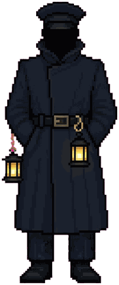
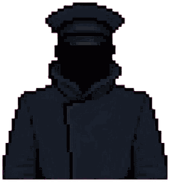
The Night Attendant
YouYou, on the closing-night shift
You. A lantern, a closing night and a town coming apart one notice at a time. Find out why.

Residents of Marrowmere
Marrowmere has 712 living residents, 86 kept and 31 others, though the sign at the Gate still says POP. 666 GHOSTS. Here are fifteen of them, and you.
Now and then, someone in Marrowmere dies suddenly and comes back at dusk on the third night. The sexton meets them and walks them home, and from then on the town calls them kept.
The kept are themselves, only a little chilly. They are solid to the touch. Their eyes look dark and are hard to meet, their breath never fogs, not even on a frosty night like this one, and they cannot leave the township. Since 1976 they have done the scaring for the Show, in hospital-linen sheets with two eye holes. They are paid for it, though By-law 3 says they may not own property. In time, any of them may choose to rest, at the Still House at the top of town.
Point at a card, or tab to it, for a second look.


You, on the closing-night shift
You. A lantern, a closing night and a town coming apart one notice at a time. Find out why.
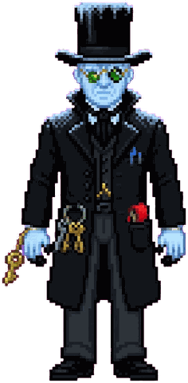
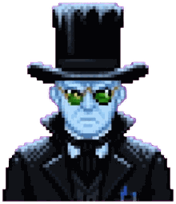
Clerk of the Township since 1888
He wrote IT WILL HOLD on the morning of the Great Fall. Tonight he's closing the town. By order.
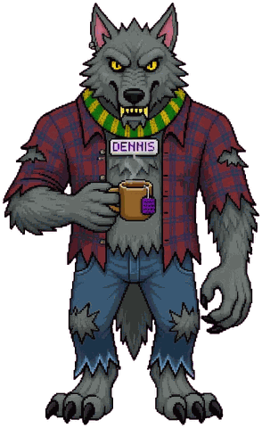
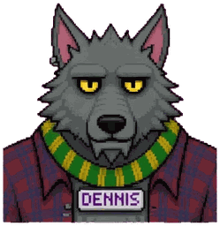
The werewolf of Werewolf Woods
Stalks tourists magnificently on cue and is mild and polite off it. He hears everything said in the Woods.
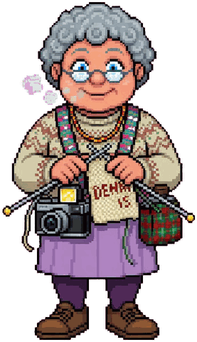
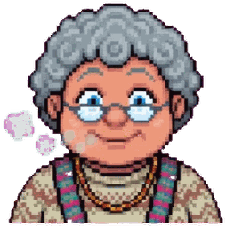
Keeps the Woods tea hut
Knits DENNIS tags in every colour, in case anyone forgets. Twenty-eight years of photographs, and not one he likes.
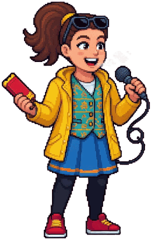
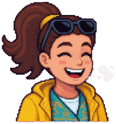
Gate tickets and the tannoy
Wants to do the scary announcements. Has been told her voice is too cheerful. “Welcome, and I mean that.”
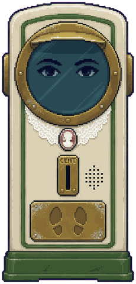
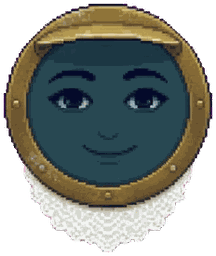
Speak-Your-Weight machine on the old platform
Nobody has ever stepped off her pleased. She would like that, once.
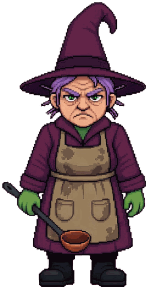
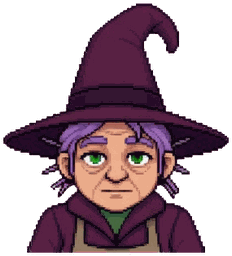
Hedge-witch of the bunkhouse kitchen
Cooks enormous portions for the kept and runs the fog for the Show. Soup is soup. Do not taste the fog.
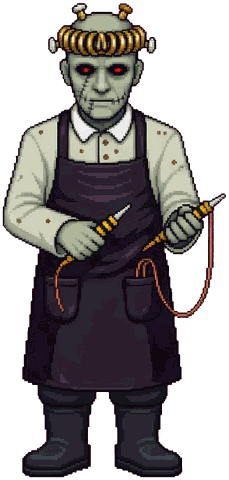
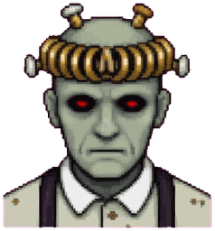
Galvanic researcher, Voss's Lab
Came in 1958 to study the stone electrically. Blames the power for everything. Looks hard at his instruments when a certain kept young man walks by.
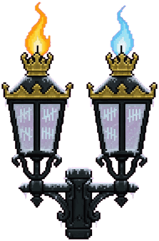
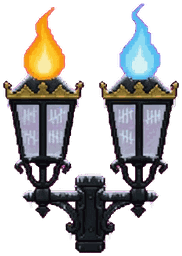
Prudence and Patience, either side of the Gate
Twin sisters, kept in the Gate's two lamps. They count every visitor through and never agree. Hats are a sore point.
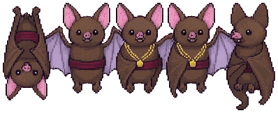
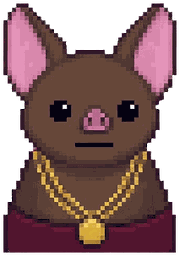
Five bats who keep the minutes
They roost in the old council room, fly the town at dusk and minute everything. Carried, three to one, one abstaining.
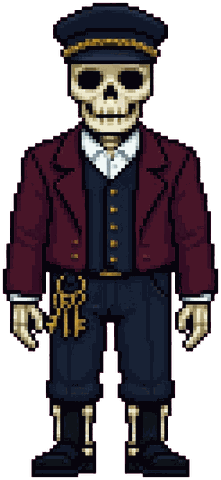
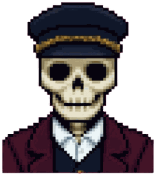
Skeleton porter at the Gate
Still carries visitors' suitcases three steps toward the viaduct from habit. When his skull falls off, he catches it. Politely.
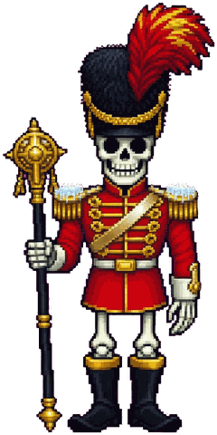
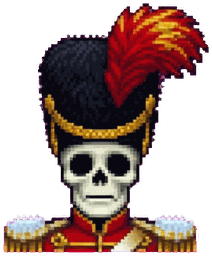
Skeleton drum major, the Monster Parade
Led the 1919 Peace Day parade and has never said it was over. Still marshals every turn round Market Square.
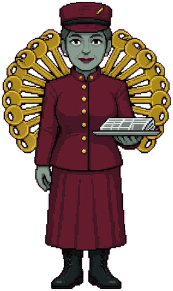
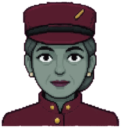
Concierge of the Ghost Hotel
Watches guests like a pan of milk and writes everything down. One room is always reserved. She will not say for whom.
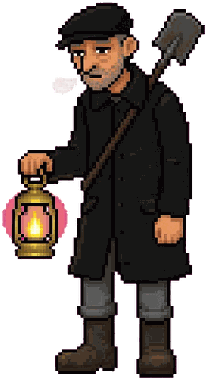
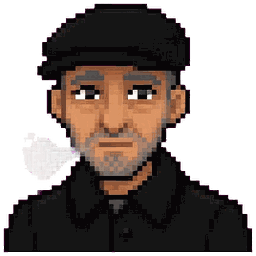
Sexton, keeper of the lychgate lantern
Digs graves into the ridge and meets the kept on their third night. He has walked seventeen of them home.
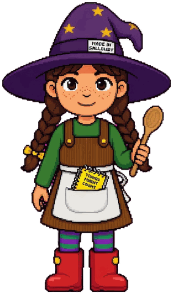
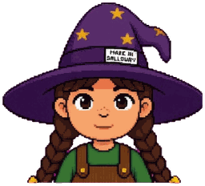
Hedge's Saturday apprentice and chief taster
Eleven, in a souvenir witch's hat three sizes too big. Keeps a notebook headed THINGS THAT MIGHT COUNT.
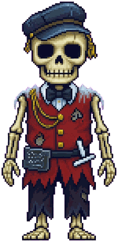
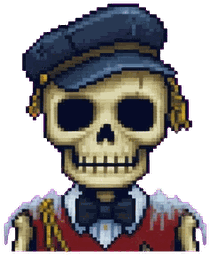
Deaf skeleton brass band, Band Hall
The railway's first blast in 1880 found them seated inside the ridge. They stood up and played, and have not missed a Saturday since.
Coming 2027. Wishlist Marrowmere on Steam and you will hear first.